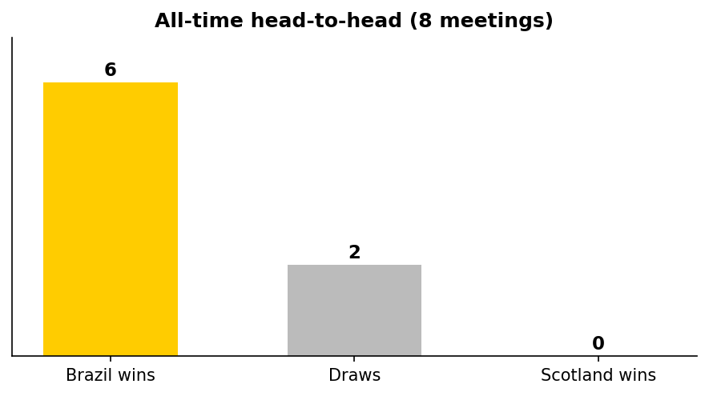
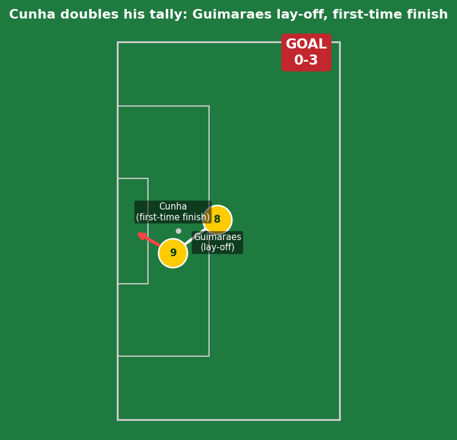

Scotland vs Brazil
Vinicius Junior (7', 45+3') and Matheus Cunha (60') scored as Brazil cruised to a comfortable win that was never in doubt after the 1st-minute opener. Scotland's only response came too late - a Ferguson free-kick and McTominay header, both saved, were their first shots on target since their opening-game winner against Haiti.
Brazil top the group, advancing to face the Group F runner-up in Houston (June 29). Morocco beat Haiti 4-2 to finish second. Scotland finish third - not eliminated, but now dependent on the best third-place rankings across all groups.

Brazil have won 7 of 9 all-time meetings, drawn 2, never lost to Scotland - including their last World Cup meeting, a 2-1 win in 1998. This was as one-sided as that history suggested.


Scotland (4-4-1-1): Gunn; Patterson, McKenna, Hendry, Robertson (c); Gannon-Doak, Ferguson, McLean, McGinn; McTominay; Shankland. Brazil (4-3-3): Alisson; Danilo, Marquinhos (c), Magalhaes, D. Santos; Casemiro, Guimaraes, Paqueta; Rayan, Cunha, Vinicius Jr.
Scotland's actual XI was more conservative than the pre-match guess: no Souttar, Hanley, or Adams, and a flat back four instead of a back three. McTominay played as a free No.10 behind lone striker Shankland - a narrow, containing shape built to stay compact rather than press high or attack with width.
That shape had a real cost out wide. Brazil's full-backs found more room to overlap than against a back three, and Brazil's actual 4-3-3 was well-built to exploit exactly that space through Vinicius Jr and Rayan.
The key tactical moment: there wasn't really one - Vinicius's 1st-minute goal set the tone before either side had settled, and Scotland never recovered territorially. The closest thing to a turning point was Robertson's half-time injury, removing Scotland's only genuine outlet just as they might have needed to chase the game.

The fastest possible nightmare start for Scotland. McKenna received a routine ball inside his own box under no real pressure, took a touch to clear, and Rayan closed him down and won the ball clean. Rayan squared it across the six-yard box for an unmarked Vinicius Junior, who finished into an empty net.

Vinicius Jr found the net a second time after stripping the ball off Jack Hendry and surging into the box - but VAR ruled it out for a foul Vinicius committed during the challenge that won the ball, not offside. Score stayed 1-0.
Second time a Scotland centre-back has been pressured into losing the ball in a dangerous area by the same player - a clear sign of where Brazil's press is targeting.

Right on the stroke of half-time. Bruno Guimaraes drove forward and whipped in a delivery toward the back post that Andy Robertson lost in the air, leaving Vinicius completely unmarked to head home - Guimaraes' first assist of the night.

Brazil's best move of the night. Casemiro threaded a pass through Scotland's lines to Guimaraes, who drove forward before rolling it across to an unmarked Cunha. Guimaraes' second assist of the match.
Scotland's captain did not return for the second half. Played the full 45 before coming off - looks like a fitness concern rather than a tactical change, a worrying sign given his importance both defensively and at set-pieces.
An emotional moment in Miami - Neymar replaced Cunha, the two sharing a respectful embrace as Brazil's most decorated forward made his first appearance of the tournament. With the game already won, this looks like Ancelotti managing the scoreline while giving Neymar minutes.
Lewis Ferguson hammered a free-kick that Alisson parried, and McTominay rose to meet the resulting corner - saved again. Scotland's first shot on target since John McGinn's goal vs Haiti on June 14. Too late for the scoreline, but a sign of life.

Approximate final figures: Brazil ~58% possession, 16 shots (7 on target), ~2.9 xG. Scotland ~42% possession, 4 shots (2 on target), ~0.4 xG. The half-time xG split alone (2.79 to 0.15) tells the real story.
Got right: the core call - Brazil winning comfortably by exploiting the space Scotland's flat back four left out wide - played out almost exactly as flagged before kickoff. Vinicius Junior was correctly identified as the single biggest individual threat, and he produced a brace. The set-piece route was also correctly flagged as Scotland's best route to a goal, even though they didn't convert it.
Got wrong: the margin ran ahead of the pre-match projection once McKenna's 1st-minute error set the tone immediately, and the assist picture (Guimaraes with two, not Rayan) wasn't something the pre-match analysis could have specifically called. The live updates corrected this as it happened.
Scotland
Gunn - 6.5
McKenna - 4.5 (1st-min error)
Hendry - 5.0
Robertson - 5.5 (off injured)
McTominay - 6.5 (best Scot on the pitch)
Brazil
Alisson - 7.0
Marquinhos - 7.0
Guimaraes - 8.5 (2 assists)
Vinicius Jr - 9.0 ⭐ MOTM (brace)
Cunha - 7.5 (clinical finish)
- Scotland's flat back four without a deep screen is a structural problem, not a one-off - exposed inside the 1st minute and again for the disallowed goal, both centre-backs individually, same area of the pitch.
- Brazil's depth is real: three different scorers/creators (Vinicius, Cunha, Guimaraes) before Neymar even entered, with Endrick and Martinelli unused.
- Robertson's injury is the storyline to track - if unavailable for the Round of 32, Scotland's only real goal threat (set-pieces) takes a big hit.
Next: Brazil face the Group F runner-up in Houston, June 29. Scotland's status depends on the best third-place rankings - check back once all groups conclude.